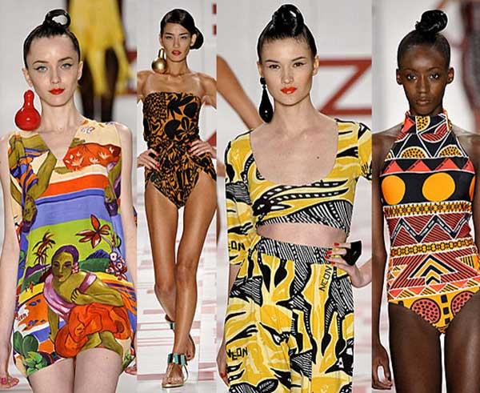
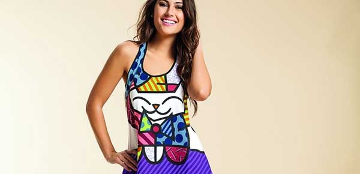
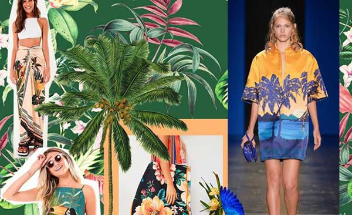
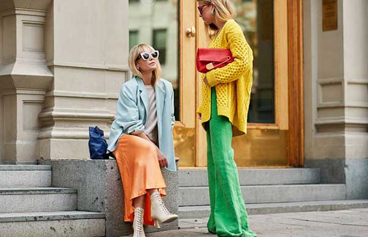

A moda brasileira é uma mistura de gostos, desde a influência internacionais das passarelas, com uma pitada daquilo que só o Brasil tem.
Pensando nisso, vários estilistas lançam suas peças abrangendo as diferentes culturas existentes no país, já que no Brasil existem descendentes de todos os estilos com vários perfis de pessoas.
Estar na moda por sua vez, é estar também bem consigo mesmo e apostar em looks que trazem em evidência seu estilo próprio. Por isso, a indústria da moda brasileira apresenta diversos modelos de looks para você usar uma peça com inspiração no país./
Para quem ama uma roupa estampada, os desenhos indígenas podem ser uma ótima opção, já que representam a história de nossa colonização. Este estilo de estampa é muito confundido com o psicodélico ou étnico trazendo muitas cores em seu destaque. Por este motivo, separamos algumas peças que condizem com a moda brasileira, levando em consideração itens essenciais de um guarda-roupa moderno.
Romero Britto é o pintor e escultor que mais faz sucesso entre as celebridades e público do exterior. Com isso, apresenta sua técnica de maneira bem particular com desenhos e esculturas coloridas que retratam o cubismo e pop art.Radicalizado Americano, Romero Britto é um fenômeno em venda, somando as cores e traços geométricos com a arte de proporcionar movimentos às figuras. No quesito mundo da moda não poderia ser diferente, a arte de Romero Britto está por toda a parte, desde peças do vestuário até em móveis de decoração.Além disso, há quem odeie as obras do artista, porém devemos levar em consideração que elas são muito brasileiras.
Uma das maiores riquezas do Brasil sem dúvidas é a Amazônia, descrita por suas florestas e belezas naturais somente encontradas em território brasileiro.Diante disso, várias linhas de roupas são lançadas em homenagem a nossa riqueza, isso inclui as plantas e árvores exclusivas da nossa Amazônia, bem como dos demais estados do país. Por isso, para quem é do Brasil, algumas estampas são mais familiares mostrando o quão fashion são as nossas riquezas. Atualmente os vestidos longos apresentam estampas florais e verdes que traduzem nosso clima tropical, incluindo o charme e elegância de nossas características únicas.
O azul, verde e amarelo são cores típicas da bandeira do Brasil, sendo assim, não poderiam ficar de fora de nossa lista de inspirações. Desse modo, a moda brasileira mais usada é o azul e amarelo, duas combinações que trazem estilo e versatilidade.Contudo, a saia lápis, macaquinho e short são peças incríveis de verão para usar nas cores amarela e azul. Por esse motivo, aposte na combinação dessas duas cores e tenho certeza que você vai arrasar.
